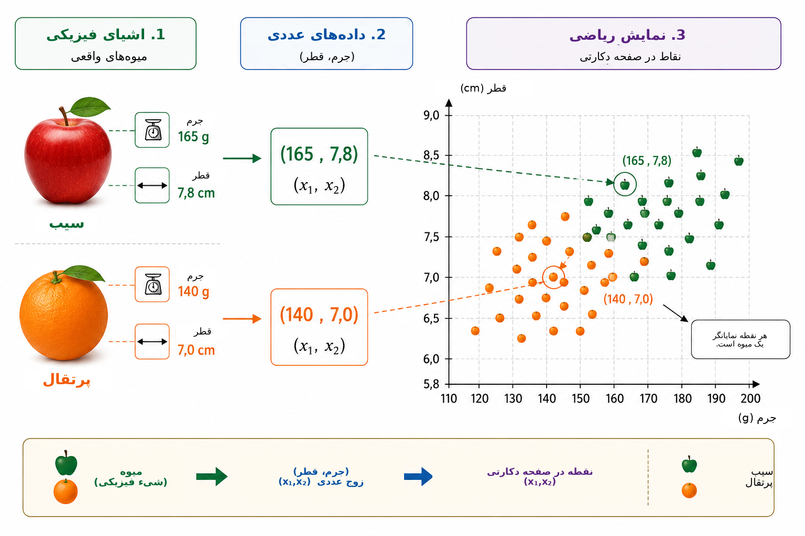
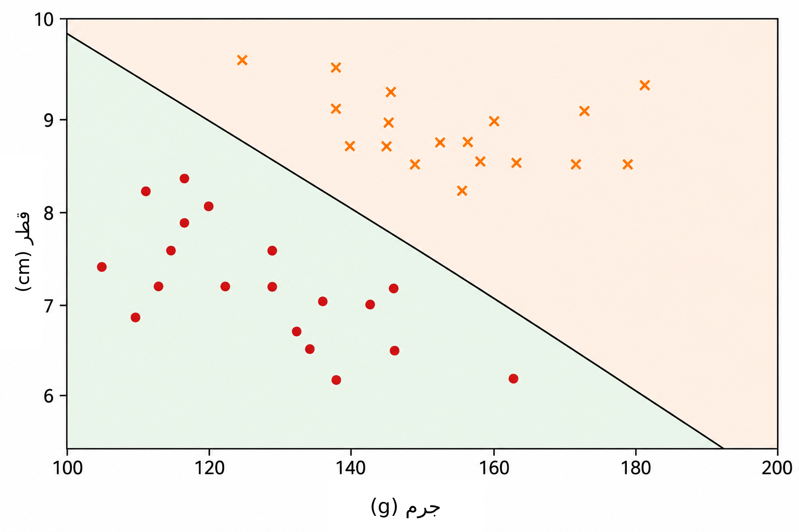
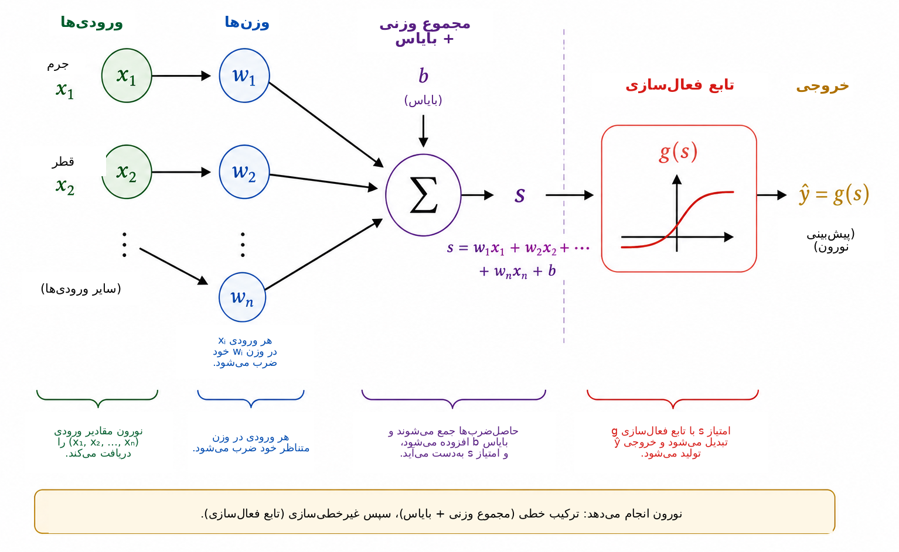
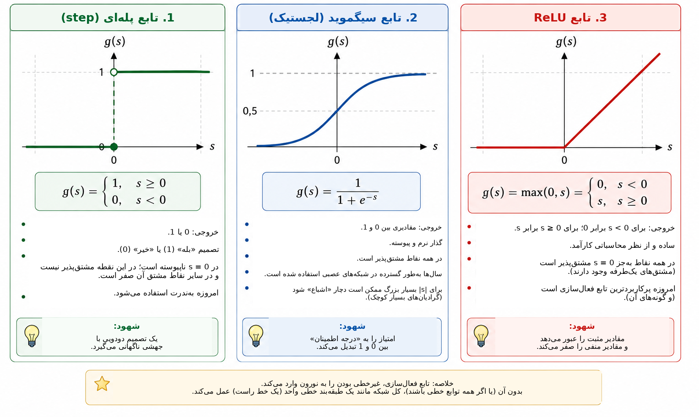
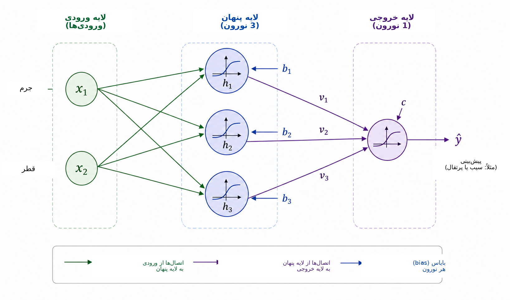
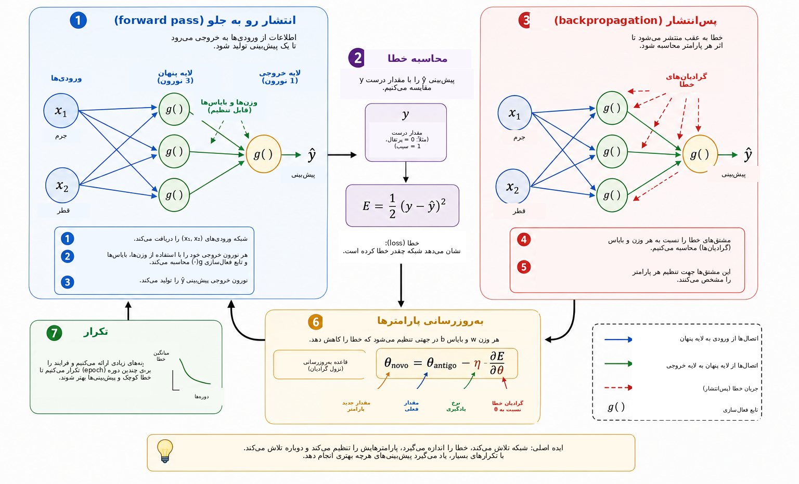
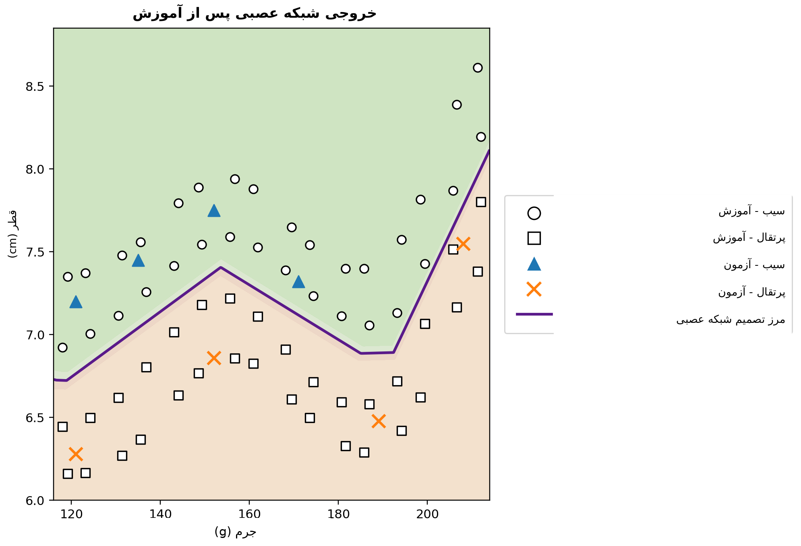

یک رایانه چه زمانی میتواند یاد بگیرد؟
در زندگی روزمره تقریباً بدون آنکه متوجه باشیم تصمیمهای طبقهبندی میگیریم. با نگاه کردن به یک میوه، خیلی سریع تشخیص میدهیم که سیب است یا پرتقال؛ وقتی پیامی به تلفن همراه میرسد، گفتوگویی واقعی را از تبلیغ ناخواسته جدا میکنیم؛ در تحلیلهای پزشکی چند اندازهگیری ممکن است برای پشتیبانی از یک تصمیم با هم ترکیب شوند؛ و در مؤسسات مالی پیش از اعطای اعتبار، اطلاعات گوناگونی ارزیابی میشود. در همه این نمونهها چند ویژگی بهطور همزمان در نظر گرفته میشوند تا یک پاسخ تولید شود.
در بسیاری از برنامههای رایانهای سنتی، قواعدی که این پاسخ را تولید میکنند بهصراحت توسط برنامهنویس نوشته میشوند. این روش هنگامی مناسب است که قواعد شناختهشده باشند و بتوان آنها را روشن بیان کرد. اما وقتی دادهها بسیار متغیرند یا بیان همه شرایط لازم برای یک تصمیم خوب از پیش دشوار است، این رویکرد کارایی کمتری دارد. در اینجا پرسشی طبیعی مطرح میشود:
آیا میتوان برنامهای ساخت که بهجای دریافت قاعده تصمیمگیری از پیش، آن را از مثالها یاد بگیرد؟
این یکی از ایدههای مرکزی یادگیری ماشین است؛ شاخهای از هوش مصنوعی که به روشهای برازش مدلها بر پایه داده میپردازد . در یک مسئله یادگیری نظارتشده، الگوریتم مثالهایی را همراه با پاسخ صحیح آنها دریافت میکند و در پی مدلی هستیم که بتواند برای حالتهایی که در آموزش استفاده نشدهاند نیز پیشبینیهای مفیدی انجام دهد. در میان مدلهای فراوانی که برای این منظور توسعه یافتهاند، شبکههای عصبی مصنوعی در کاربردهایی مانند تشخیص تصویر، پردازش زبان، تحلیل سیگنال و پیشبینی سریهای زمانی اهمیت زیادی پیدا کردهاند .
استفاده از شبکههای عصبی بهعنوان پلی میان ریاضیات، محاسبات و آموزش مدرسه پیشتر توسط Batista و Martins در Professor de Matemática Online بررسی شده است . آنان فعالیتی را ارائه کردند که آموزش معلمان، Python و تشخیص ارقام را با یکدیگر پیوند میدهد. مقاله حاضر مسیر مکملی را دنبال میکند. هدف اصلی ما آشکار کردن ریاضیات درونی یک شبکه عصبی کوچک است: از هندسه تحلیلی آغاز میکنیم و گامبهگام به محاسبه گرادیان و پیادهسازی دستی پسانتشار میرسیم.
با وجود پیچیدگی کاربردهای امروزی، هسته ریاضی یک شبکه عصبی را میتوان با مفاهیمی نسبتاً آشنا معرفی کرد. در سطح پایه، شبکه عصبی ترکیبی از توابع است که پارامترهایشان بر اساس داده تنظیم میشوند. از یک مسئله هندسی ساده آغاز میکنیم، یک خط جداکننده را بهصورت یک نورون مصنوعی بازتفسیر میکنیم، چند نورون را به هم متصل میسازیم، نقش توابع فعالسازی را بررسی میکنیم و نشان میدهیم مشتقها چگونه میتوانند برای تنظیم خودکار پارامترهای شبکه استفاده شوند. سپس یک مثال کوچک اما کامل را در Python پیادهسازی میکنیم و ارتباط مستقیم میان معادلات و کد را حفظ میکنیم.
نمایش ریاضی مسئله
برای فهم نحوه کار یک شبکه عصبی، عمداً با مسئلهای ساده آغاز میکنیم: تمایز میان سیب و پرتقال. یک میوه ویژگیهای بسیاری دارد که میتوانند برای این کار مفید باشند، مانند رنگ، جرم، قطر، بافت و بو. با این حال یک مدل ریاضی اولیه لازم نیست همه این پیچیدگی را در بر گیرد. تنها دو کمیت را که اندازهگیری آنها آسان است به کار میبریم: جرم بر حسب گرم و قطر بر حسب سانتیمتر.
بنابراین هر میوه با یک زوج مرتب نمایش داده میشود \[(x_1,x_2),\] که در آن \[x_1=\text{جرم} \qquad\text{و}\qquad x_2=\text{قطر}.\]
برای نمونه، زوج \((155,\;7.2)\) میوهای با جرم \(155\) g و قطر \(7.2\) cm را نمایش میدهد. با جایگزین کردن شیء فیزیکی با دو اندازهگیری عددی، هر میوه را به نقطهای در صفحه دکارتی نسبت میدهیم: مؤلفه نخست جرم و مؤلفه دوم قطر را مشخص میکند. شکل 1 این نمایش را برای مجموعهای فرضی از سیبها و پرتقالها نشان میدهد.

این تبدیل ظاهر مسئله را تغییر میدهد. بهجای اینکه مستقیماً بپرسیم چگونه یک سیب یا پرتقال را تشخیص دهیم، میتوانیم پرسشی هندسی مطرح کنیم: نقاط متعلق به دو کلاس چگونه در صفحه از یکدیگر جدا میشوند؟ این تغییر دیدگاه در یادگیری ماشین بنیادی است. تصویر، متن، صدا و سیگنالهای آزمایشگاهی همگی پیش از آنکه الگوریتمی بتواند آنها را پردازش کند باید به نمایشهای عددی تبدیل شوند. در مثال ما هر شیء فقط دو مؤلفه دارد؛ در کاربردهای واقعی یک نمایش ممکن است صدها، هزاران یا حتی میلیونها مؤلفه داشته باشد. اصل یکسان است: هر مثال با مجموعهای از اعداد نمایش داده میشود و مدل در پی قاعدهای است که این نمایش را به پاسخ مورد نظر نگاشت کند.
از سادهترین قاعده هندسی ممکن آغاز میکنیم و میپرسیم آیا یک خط راست میتواند نقاط سیب و پرتقال را بهطور مناسب از یکدیگر جدا کند.
یک خط راست بهعنوان طبقهبند
پس از آنکه هر میوه به نقطهای در صفحه دکارتی تبدیل شد، طبقهبندی به یک مسئله هندسی بدل میشود: آیا یک خط راست میتواند سیبها را از پرتقالها جدا کند؟ این پرسش ایده پایه خانواده مهمی از روشهای یادگیری ماشین را در خود دارد که طبقهبندهای خطی نامیده میشوند.
خطی را در نظر بگیرید که از میان ابر داده عبور میکند، همانگونه که در شکل 2 دیده میشود. خط، صفحه را به دو نیمصفحه تقسیم میکند. اگر بیشتر نقاط سیب در یک سو و بیشتر نقاط پرتقال در سوی دیگر قرار گیرند، موقعیت یک میوه جدید نسبت به خط میتواند بهعنوان قاعده طبقهبندی به کار رود. پس از اندازهگیری جرم و قطر، میوه را با یک نقطه نمایش میدهیم و تعیین میکنیم آن نقطه در کدام سوی خط قرار گرفته است.

در صفحه دکارتی \((x_1,x_2)\)، یک خط را میتوان بهصورت \[w_1x_1+w_2x_2+b=0, \qquad (w_1,w_2)\neq(0,0)\] نوشت.
بردار \((w_1,w_2)\) بر خط عمود است و در نتیجه جهت آن را تعیین میکند، در حالی که پارامتر \(b\) در تعیین مکان خط نقش دارد. این نمایش اندکی افزونگی دارد: ضرب \(w_1\)، \(w_2\) و \(b\) در یک ثابت ناصفر دقیقاً همان خط را تولید میکند. پس پارامترهای توصیفکننده مرز یکتا نیستند. تفسیر عددی آنها نیز به مقیاس متغیرها بستگی دارد. از آنجا که جرم بر حسب گرم و قطر بر حسب سانتیمتر اندازهگیری میشود، اندازه عددی \(w_1\) و \(w_2\) را نباید بدون توجه به تفاوت واحدها مستقیماً با یکدیگر مقایسه کرد.
خود معادله خط راه سادهای برای تعیین سوی قرارگیری یک نقطه نسبت به مرز فراهم میکند. امتیاز زیر را تعریف میکنیم: \[s(x_1,x_2)=w_1x_1+w_2x_2+b.\]
اگر \(s(x_1,x_2)=0\) باشد، نقطه روی خط قرار دارد. اگر \(s(x_1,x_2)>0\) باشد، نقطه در یک نیمصفحه و اگر \(s(x_1,x_2)<0\) باشد، در نیمصفحه دیگر است. اگر تصمیم بگیریم امتیازهای مثبت متناظر با سیب و امتیازهای منفی متناظر با پرتقال باشند، قاعده به شکل زیر درمیآید: \[\begin{cases} s(x_1,x_2)\geq 0 & \Longrightarrow \text{سیب},\\ s(x_1,x_2)<0 & \Longrightarrow \text{پرتقال}. \end{cases}\]
برای نمونه، مرزی با پارامترهای \[w_1=\frac{1}{10}, \qquad w_2=2, \qquad b=-30\] را در نظر بگیرید. برای میوهای با جرم \(160\) g و قطر \(7.8\) cm داریم \[\begin{aligned} s &=\frac{1}{10}\times160+2\times7.8-30\\ &=16+15.6-30\\ &=1.6. \end{aligned}\] چون امتیاز مثبت است، نقطه در نیمصفحهای قرار دارد که آن را به سیب اختصاص دادهایم. بنابراین این طبقهبند میوه را سیب تشخیص میدهد.
هر انتخابی از \(w_1\)، \(w_2\) و \(b\) طبقهبندی خوبی ایجاد نمیکند. برخی خطوط دو گروه را ضعیف جدا میکنند و برخی دیگر خطای کمتری دارند. مسئله یادگیری دقیقاً این است که با استفاده از مثالهای از پیش برچسبگذاریشده، مقادیر پارامترها را طوری تعیین کنیم که یک معیار خطای مدل کاهش یابد. بهجای آنکه مکان خط را مستقیماً برنامهریزی کنیم، میخواهیم الگوریتم ضرایب آن را از دادهها تنظیم کند.
یک خط واحد زمانی میتواند خوب عمل کند که کلاسها تقریباً بهصورت خطی جداشدنی باشند. مجموعهدادههای پیچیدهتر ممکن است به مرزی غیرخطی نیاز داشته باشند. پیش از پرداختن به این محدودیت، طبقهبندی را که ساختهایم بهصورت یک واحد محاسباتی بنیادی بازتفسیر میکنیم: یک نورون مصنوعی.
نورون مصنوعی
در بخش پیش، عبارت \[s=w_1x_1+w_2x_2+b\] برای تعیین سوی قرارگیری یک میوه نسبت به یک خط استفاده شد. همین عبارت را میتوان نخستین مرحله محاسبه یک نورون مصنوعی دانست. نورون ورودیهای عددی را دریافت میکند، آنها را با وزنها و یک بایاس ترکیب میکند و سپس برای تولید خروجی، یک تابع ریاضی را اعمال میکند.
در مثال ما ورودیها جرم \(x_1\) و قطر \(x_2\) هستند. هر ورودی در پارامتری به نام وزن ضرب میشود؛ حاصلضربها با جمله ثابت \(b\)، که بایاس نام دارد، جمع میشوند. شکل 3 این محاسبه را بهصورت شماتیک نشان میدهد.

وزنها تعیین میکنند تغییر در ورودیها چگونه امتیاز را تغییر میدهد. اگر \(x_2\) و همه کمیتهای دیگر ثابت نگه داشته شوند، تغییر \(\Delta x_1\) باعث تغییر \(w_1\Delta x_1\) در \(s\) میشود. به همین ترتیب، تغییر \(\Delta x_2\) امتیاز را به اندازه \(w_2\Delta x_2\) تغییر میدهد. علامت وزن نیز مهم است: وزن مثبت باعث میشود افزایش ورودی امتیاز را افزایش دهد، در حالی که وزن منفی اثر معکوس دارد. وقتی متغیرها واحدها و مقیاسهای متفاوت دارند باید در استفاده از این تفسیر دقت کرد. به همین دلیل در پیادهسازیهای عملی، دادههای ورودی معمولاً پیش از آموزش نرمالسازی یا استانداردسازی میشوند.
بایاس \(b\) جمله ثابت تبدیل آفین است. از دید هندسی، این پارامتر اجازه میدهد مرز تصمیم جابهجا شود. اگر \(b=0\) باشد، معادله \[w_1x_1+w_2x_2=0\] خط را وادار میکند از مبدأ عبور کند. با وجود بایاس، مرز میتواند به مکانهای دیگر منتقل شود. بهطور معادل، وقتی \(x_1=x_2=0\) باشد، امتیاز برابر \(s=b\) است.
امتیاز لازم نیست خروجی نهایی نورون باشد. بهطور کلی یک تابع فعالسازی \(g\) روی آن اعمال میشود: \[\widehat{y}=g(s)=g\left(w_1x_1+w_2x_2+b\right).\] بنابراین محاسبه دو مرحله دارد: \[\begin{aligned} s &= w_1x_1+w_2x_2+b,\\[4pt] \widehat{y} &= g(s). \end{aligned}\]
با استفاده از مقادیر پارامترهای بخش قبل، \(s=1.6\) به دست میآید. اگر تابع پلهای را انتخاب کنیم \[g(s)= \begin{cases} 1, & s\geq0,\\ 0, & s<0, \end{cases}\] آنگاه \(\widehat{y}=g(1.6)=1\) است. بر اساس قرارداد ما، میوه بهعنوان سیب طبقهبندی میشود. با این فعالسازی، تصمیم هنگامی تغییر میکند که \(s\) از صفر عبور کند؛ بنابراین مرز کلاس دقیقاً \[w_1x_1+w_2x_2+b=0\] است.
پس یک نورون منفرد شیء ریاضی سادهای با پارامترهای قابل تنظیم است. اهمیت واقعی آن زمانی آشکار میشود که تعداد زیادی از این واحدها به یکدیگر متصل شوند. اما پیش از ساخت شبکه باید بفهمیم چرا تابع فعالسازی ضروری است.
چرا به تابع فعالسازی نیاز داریم؟
یک نورون ابتدا با یک تبدیل آفین امتیازی را محاسبه میکند و سپس تابع فعالسازی را روی آن اعمال میکند. اگر شبکه عصبی قرار باشد روابط پیچیده را نمایش دهد، این مرحله دوم ضروری است. برای دیدن دلیل آن، شبکهای را تصور کنید که در آن هیچ تابع فعالسازیای به کار نرفته باشد. در این صورت هر واحد شکلی مانند \[y=w_1x_1+w_2x_2+b\] خواهد داشت.
برای یک مثال یکبعدی، فرض کنید واحد اول \[h=ax+b\] را تولید کند و واحد دوم \[y=ch+d\] را محاسبه کند. با جایگذاری داریم \[y=c(ax+b)+d=acx+(cb+d),\] که همچنان یک تابع آفین از \(x\) است. همین نتیجه در چند بعد نیز برقرار است: ترکیب چند تبدیل آفین باز هم آفین است. بنابراین افزودن لایههای متعدد بدون یک عمل غیرخطی، شبکه را از نظر بنیادی بیانگرتر نمیکند؛ کل ترکیب را میتوان با یک تبدیل آفین منفرد جایگزین کرد.
تابع فعالسازی این محدودیت را از میان برمیدارد. پس از محاسبه امتیاز \(s\)، نورون معمولاً یک نگاشت غیرخطی را اعمال میکند: \[h=g(s).\] وقتی چند واحد از این نوع به هم متصل شوند، ترکیب حاصل دیگر به یک تبدیل آفین واحد فروکاستنی نیست. به این ترتیب شبکه میتواند مرزهای تصمیم پیچیدهتری بسازد.
سادهترین تابع فعالسازی، تابع پلهای است: \[g(s)= \begin{cases} 1, & s\geq0,\\ 0, & s<0. \end{cases}\] این تابع یک تصمیم دودویی تولید میکند و برای فهم طبقهبندی بسیار مفید است. با این حال مشتق آن برای \(s\neq0\) صفر و در \(s=0\) تعریفنشده است. از آنجا که آموزش مبتنی بر گرادیان از مشتقها برای تعیین نحوه تغییر پارامترها استفاده میکند، تابع پلهای برای این سازوکار آموزشی مناسب نیست.
یک جایگزین، تابع سیگموید است: \[\sigma(s)=\frac{1}{1+e^{-s}}.\] این تابع هر عدد حقیقی را به مقداری کاملاً بین \(0\) و \(1\) نگاشت میکند. برای \(s\)های بسیار منفی، خروجی به \(0\) نزدیک میشود؛ برای \(s\)های بسیار مثبت به \(1\) نزدیک میشود؛ و میان این دو حالت، گذار نرم است. سیگموید در همه جا مشتقپذیر است و \[\sigma'(s)=\sigma(s)\bigl(1-\sigma(s)\bigr).\] از آنجا که خروجی آن بین \(0\) و \(1\) قرار دارد، اغلب در لایه خروجی طبقهبندهای دودویی استفاده میشود. در یک صورتبندی احتمالاتی همراه با تابع زیان مناسب، خروجی را میتوان بهعنوان برآورد احتمال کلاس متناظر با \(1\) تعبیر کرد. با این حال، در لایههای پنهان سیگموید میتواند مشکلی ایجاد کند: برای ورودیهای با قدر مطلق بزرگ، مشتق آن بسیار کوچک میشود و به مسئله محو شدن گرادیان در شبکههای عمیق کمک میکند.
یکی از توابع فعالسازی پرکاربرد در لایههای پنهان، ReLU یا واحد خطی یکسوشده است: \[\operatorname{ReLU}(s)=\max(0,s) = \begin{cases} 0, & s<0,\\ s, & s\geq0. \end{cases}\] اگرچه ReLU از دو قطعه خطی ساخته شده است، در کل یک تابع خطی نیست. مشتق آن برای \(s<0\) برابر \(0\) و برای \(s>0\) برابر \(1\) است. در \(s=0\) مشتق معمول وجود ندارد و پیادهسازیهای نرمافزاری یک قرارداد برای گرادیان در نظر میگیرند. برای ورودیهای مثبت، مشتق با افزایش \(s\) کوچک نمیشود و یکی از سازوکارهای اشباع سیگموید را ندارد.
شکل 4 این سه تابع فعالسازی را بهصورت بصری مقایسه میکند: جهش ناگهانی تابع پلهای، گذار نرم سیگموید و تغییر شیب ReLU.

ویژگیهای اصلی این توابع در جدول زیر خلاصه شدهاند.
| تابع | خروجی | مشتق | کاربرد معمول |
|---|---|---|---|
| پلهای | \(\{0,1\}\) | برای \(s\neq0\) صفر؛ در \(s=0\) تعریفنشده | مدلهای تاریخی و مثالهای آموزشی |
| سیگموید | \((0,1)\) | برای همه \(s\) وجود دارد | لایه خروجی در طبقهبندی دودویی |
| ReLU | \([0,\infty)\) | برای \(s<0\) برابر \(0\) و برای \(s>0\) برابر \(1\) | لایههای پنهان |
جزئیات این توابع متفاوت است، اما نقش مفهومی مشترک آنها وارد کردن غیرخطی بودن است. همین غیرخطی بودن به شبکه کوچک بخش بعد اجازه میدهد روابطی را نمایش دهد که یک خط راست واحد قادر به نمایش آنها نیست.
برای مطالعه بیشتر، Haykin شرح کلاسیکی از شبکههای عصبی ارائه میکند، در حالی که Goodfellow، Bengio و Courville توابع فعالسازی و آموزش شبکههای عمیق را در چارچوبی گستردهتر بررسی میکنند. متن آزاد Nielsen نیز برای شکلگیری شهود درباره نورونها، فعالسازیها و یادگیری بسیار مناسب است.
ساخت یک شبکه عصبی کوچک
اکنون شبکهای با دو ورودی، یک لایه پنهان شامل سه نورون و یک نورون خروجی را در نظر میگیریم. ورودیها همچنان \[x_1=\text{جرم}, \qquad x_2=\text{قطر}\] هستند و هر دو به هر نورون پنهان داده میشوند، همانگونه که در شکل 5 نشان داده شده است.

خروجیهای لایه پنهان را \(h_1\)، \(h_2\) و \(h_3\) مینامیم. هر نورون همان دو ورودی را دریافت میکند، اما وزنها و بایاس مخصوص خود را دارد: \[\begin{aligned} h_1&=g\left(w_{11}x_1+w_{12}x_2+b_1\right),\\[4pt] h_2&=g\left(w_{21}x_1+w_{22}x_2+b_2\right),\\[4pt] h_3&=g\left(w_{31}x_1+w_{32}x_2+b_3\right). \end{aligned}\]
با اینکه هر سه نورون همان جرم و قطر را دریافت میکنند، به دلیل تفاوت پارامترهایشان میتوانند پاسخهای متفاوتی تولید کنند. در فرایند آموزش، این پارامترها تنظیم میشوند تا فعالسازیهای میانی برای طبقهبندی مفید شوند.
سپس سه کمیت \(h_1\)، \(h_2\) و \(h_3\) به نورون خروجی داده میشوند. این نورون ابتدا \[s_{\mathrm{out}}=v_1h_1+v_2h_2+v_3h_3+c\] را محاسبه میکند و بعد \[\widehat{y}=g_{\mathrm{out}}\left(s_{\mathrm{out}}\right)\] را تولید میکند. برای مسئله دودویی ما از خروجی سیگمویدی استفاده میکنیم: \[\widehat{y}=\sigma\left(v_1h_1+v_2h_2+v_3h_3+c\right), \qquad 0<\widehat{y}<1.\]
اگر \(y=1\) را برای سیب و \(y=0\) را برای پرتقال در نظر بگیریم، آستانه \(0.5\) تصمیم کلاسی زیر را میدهد: \[\widehat{y}\geq0.5 \Longrightarrow \text{سیب}, \qquad \widehat{y}<0.5 \Longrightarrow \text{پرتقال}.\] بنابراین مقادیر نزدیک به \(1\) بهطور قوی با سیب و مقادیر نزدیک به \(0\) با پرتقال مرتبطاند. همانطور که پیشتر اشاره شد، تفسیر عددی \(\widehat{y}\) بهعنوان احتمال نیازمند فرضهای اضافی درباره مدل و آموزش آن است. برای قاعده طبقهبندی مورد استفاده در اینجا، کافی است \(\widehat{y}\) را یک خروجی پیوسته شبکه بدانیم.
ویژگی مرکزی این معماری، نمایش میانی \[(x_1,x_2) \longrightarrow (h_1,h_2,h_3) \longrightarrow \widehat{y}\] است. شبکه دو ویژگی را دریافت میکند و پیش از تولید پاسخ نهایی، سه کمیت جدید میسازد. این فعالسازیها بهصورت دستی انتخاب نمیشوند؛ آنها به وزنها و بایاسها وابستهاند و بنابراین با آموزش پارامترها تغییر میکنند.
با وجود اندازه کوچک، این شبکه در مجموع سیزده پارامتر قابل تنظیم دارد. سه نورون پنهان شامل \[3(2+1)=9\] پارامترند و نورون خروجی \[3+1=4\] پارامتر دیگر دارد. در نتیجه \[9+4=13.\]
همین شمارش در نمادگذاری ماتریسی شفافتر میشود. تعریف میکنیم \[\mathbf{x}= \begin{bmatrix} x_1\\x_2 \end{bmatrix}, \qquad W^{(1)}= \begin{bmatrix} w_{11}&w_{12}\\ w_{21}&w_{22}\\ w_{31}&w_{32} \end{bmatrix}, \qquad \mathbf{b}^{(1)}= \begin{bmatrix} b_1\\b_2\\b_3 \end{bmatrix}.\] آنگاه لایه پنهان را میتوان فشرده بهصورت \[\mathbf{h}=g\left(W^{(1)}\mathbf{x}+\mathbf{b}^{(1)}\right)\] نوشت، که در آن \(g\) مؤلفهبهمؤلفه عمل میکند. برای خروجی نیز داریم \[\widehat{y} = \sigma\left(W^{(2)}\mathbf{h}+b^{(2)}\right),\] که در آن \[W^{(2)}= \begin{bmatrix} v_1&v_2&v_3 \end{bmatrix}.\]
این نمادگذاری ساختاری را پیشاپیش نشان میدهد که در برنامه Python خواهیم دید. وقتی یک میوه در ورودی قرار میگیرد و فعالسازیهای پیاپی را تا رسیدن به \(\widehat{y}\) محاسبه میکنیم، انتشار رو به جلو یا یک گذر رو به جلو انجام میدهیم. پرسش اصلی همچنان باقی است: سیزده پارامتر چگونه میتوانند بهطور خودکار تعیین شوند تا پیشبینیها با دادهها سازگار شوند؟
شبکه عصبی چگونه یاد میگیرد؟
وزنها و بایاسها از پیش معلوم نیستند. باید آنها را با استفاده از مثالهایی که پاسخ صحیحشان مشخص است تنظیم کرد. این فرایند آموزش نام دارد و میتوان آن را با چرخه زیر خلاصه کرد: \[\boxed{\text{پیشبینی}} \longrightarrow \boxed{\text{اندازهگیری خطا}} \longrightarrow \boxed{\text{تنظیم پارامترها}} \longrightarrow \boxed{\text{تکرار}}.\]
میوهای با جرم \(140\) g و قطر \(7.0\) cm را در نظر بگیرید که کلاس صحیح آن پرتقال است، بنابراین \(y=0\). فرض کنید در مرحلهای از آموزش، شبکه مقدار \(\widehat{y}=0.80\) را تولید کند. یک معیار ساده برای اختلاف میان پیشبینی و هدف، خطای مربعی است: \[E=\frac{1}{2}\left(y-\widehat{y}\right)^2.\] برای این مثال \[E=\frac{1}{2}(0-0.80)^2=0.32.\]
این عبارت برای یک مثال یک تابع زیان است. چون مربع است، \(E\geq0\) و پیشبینیهای دورتر از هدف جریمه بیشتری میگیرند. ضریب \(1/2\) محل کمینه را تغییر نمیدهد، اما مشتقگیری را ساده میکند. در طبقهبندی دودویی اغلب از زیانهای دیگری، بهویژه آنتروپی متقاطع، استفاده میشود. ما در اینجا خطای مربعی را به کار میبریم زیرا جبر آن شفاف است و برای معرفی بهینهسازی و پسانتشار کفایت میکند .
اگر مجموعه آموزش شامل \(N\) مثال باشد، یک معیار کلی، میانگین زیان است: \[J=\frac{1}{N}\sum_{i=1}^{N}E_i.\] هر پیشبینی به وزنها و بایاسهای شبکه وابسته است، پس \(J\) نیز به همه این پارامترها وابسته است. آموزش یعنی جستوجوی مقادیر پارامترهایی که \(J\) را کوچک کنند.
برای فهم سازوکار تنظیم، ابتدا تصور کنید همه پارامترها جز یک وزن \(w\) ثابت نگه داشته شوند. در این صورت میتوان زیان را تابعی به صورت \(J=J(w)\) در نظر گرفت. شکل 6 مراحل اصلی آموزش را که اکنون بررسی میکنیم خلاصه میکند.

برای خوانندگانی که با حساب دیفرانسیل آشنایی کمی دارند، مشتق را میتوان در اینجا معیاری از حساسیت موضعی دانست: مشتق نشان میدهد یک تغییر کوچک در یک پارامتر چگونه تمایل دارد مقدار زیان را تغییر دهد. علامت مشتق جهت افزایش یا کاهش موضعی تابع را نشان میدهد و قدر مطلق آن شدت این تغییر موضعی را بیان میکند.
مشتق \[\frac{\partial J}{\partial w}\] شیب موضعی را میدهد. اگر مثبت باشد، افزایش کوچک \(w\) معمولاً \(J\) را افزایش میدهد و بنابراین وزن باید در جهت مخالف حرکت کند. اگر منفی باشد، افزایش \(w\) بهطور موضعی \(J\) را کاهش میدهد. هر دو حالت با رابطه \[w_{\mathrm{new}} = w_{\mathrm{old}} - \eta\frac{\partial J}{\partial w}\] توصیف میشوند که ایده پایه نزول گرادیان است. عدد مثبت \(\eta\) نرخ یادگیری نام دارد و اندازه گام را کنترل میکند. مقدار بسیار کوچک ممکن است آموزش را کند کند و مقدار بیش از اندازه بزرگ میتواند باعث نوسان یا ناپایداری شود.
برای شبکهای با پارامترهای بسیار، \(\theta\) را هر وزن یا بایاس در نظر میگیریم. قاعده بهروزرسانی به شکل \[\theta_{\mathrm{new}} = \theta_{\mathrm{old}} - \eta\frac{\partial J}{\partial\theta}\] درمیآید. مجموعه همه مشتقهای جزئی، گرادیان زیان را تشکیل میدهد. از نظر هندسی، گرادیان در جهت سریعترین افزایش موضعی اشاره میکند؛ بنابراین منفی گرادیان یک جهت موضعی کاهش را فراهم میکند.
اکنون باید این مشتقها را زمانی محاسبه کنیم که شبکه ترکیبی از چند تابع است. در گذر رو به جلو، اطلاعات در مسیر \[\text{ورودیها} \longrightarrow \text{لایه پنهان} \longrightarrow \text{خروجی}\] حرکت میکند. برای تعیین اینکه یک پارامتر در لایهای ابتدایی چگونه بر زیان اثر میگذارد، زنجیره وابستگیها را از نظر ریاضی در جهت معکوس دنبال میکنیم. این روش پسانتشار نام دارد و در اصل کاربردی نظاممند و کارآمد از قاعده زنجیرهای است. Rumelhart، Hinton و Williams مرجع کلاسیکی برای رواج این روش در شبکههای دارای لایه پنهان فراهم کردهاند و Nielsen استنتاجی جزئی و بسیار آموزشی ارائه میکند.
برای یک زنجیره ساده وابستگی که در آن \(E\) به \(\widehat{y}\)، \(\widehat{y}\) به فعالسازی \(h\) و \(h\) به وزن \(w\) وابسته است، قاعده زنجیرهای میدهد: \[\frac{\partial E}{\partial w} = \frac{\partial E}{\partial\widehat{y}} \, \frac{\partial\widehat{y}}{\partial h} \, \frac{\partial h}{\partial w}.\] هر عامل یکی از مراحل تأثیر \(w\) بر زیان نهایی را توصیف میکند. شبکههای بزرگتر شامل تعداد زیادی از این زنجیرهها هستند و پسانتشار محاسبه را طوری سازمان میدهد که مشتقهای میانی دوباره استفاده شوند و لازم نباشد برای هر پارامتر از ابتدا محاسبه شوند.
در عمل، آموزش از مثالهای فراوان استفاده میکند. یک عبور کامل از مجموعه آموزش یک دوره یا epoch نامیده میشود. پارامترها میتوانند پس از هر مثال، همانند برنامه آموزشی بخش بعد، یا پس از گروههای کوچکی از مثالها که mini-batch نامیده میشوند بهروزرسانی شوند. حالت دوم در شبکههای بزرگتر رایج است. در هر دو صورت، چرخه پیشبینی، زیان، گرادیان و بهروزرسانی در دورههای متعدد تکرار میشود.
راه ملموسی برای دیدن این تحول، دنبال کردن پیشبینی یک مثال ثابت در مراحل مختلف آموزش است. دوباره میوهای با جرم \(140\) g و قطر \(7.0\) cm را در نظر بگیرید که کلاس صحیح آن پرتقال است. جدول 1 یک روند فرضی را نشان میدهد. این مقادیر مربوط به اجرای خاصی نیستند و فقط برای نمایش سازوکار ارائه شدهاند.
| دوره | پیشبینی \(\widehat{y}\) | زیان \(E\) | طبقهبندی |
|---|---|---|---|
| 1 | 0.86 | 0.37 | سیب |
| 5 | 0.71 | 0.25 | سیب |
| 10 | 0.55 | 0.15 | سیب |
| 20 | 0.31 | 0.05 | پرتقال |
| 40 | 0.09 | 0.004 | پرتقال |
در آغاز، خروجی به \(1\) نزدیک است و میوه بهاشتباه سیب طبقهبندی میشود. با تنظیم پارامترها، پیشبینی کاهش مییابد و سرانجام از آستانه \(0.5\) عبور میکند و کلاس درست را تولید میکند. آنچه در این فرایند تغییر میکند مقادیر عددی وزنها و بایاسهاست؛ معماری شبکه ثابت میماند.
کاهش زیان روی دادههای آموزش هدف نهایی نیست. یک شبکه مفید باید برای مثالهایی که در برازش پارامترها استفاده نشدهاند نیز پیشبینیهای خوبی انجام دهد. این توانایی تعمیم نامیده میشود. اگر مدل بیش از حد با ویژگیهای خاص مجموعه آموزش سازگار شود و روی دادههای جدید بدتر عمل کند، با بیشبرازش روبهرو هستیم. در ارزیابیهای دقیقتر، دادهها معمولاً به مجموعههای آموزش، اعتبارسنجی و آزمون تقسیم میشوند: اولی پارامترها را برازش میکند، دومی برای انتخابهای انجامشده هنگام توسعه مدل به کار میرود و سومی برای ارزیابی نهایی کنار گذاشته میشود. بحث گستردهتر درباره تعمیم و ارزیابی مدل را میتوان در Faceli et al. و Goodfellow، Bengio و Courville یافت.
بنابراین به معنای ریاضی یادگیری در یک شبکه عصبی رسیدهایم. در این چارچوب، یادگیری یعنی تنظیم پارامترهای یک تابع مرکب بهمنظور کاهش یک معیار خطا روی دادهها و، در حالت ایدهآل، تعمیم به مثالهای جدید. شبکه پیشبینی میکند، زیان را محاسبه میکند، با مشتقها تعیین میکند پارامترها چگونه بر آن زیان اثر دارند و سپس دنبالهای از اصلاحهای کوچک انجام میدهد.
از ریاضیات تا Python
اکنون از معادلات به یک برنامه اجرایی میرویم. هدف استفاده از کتابخانه تخصصی شبکه عصبی نیست، بلکه میخواهیم با NumPy همان عملیات ریاضی را که در مقاله توسعه دادهایم مستقیماً پیادهسازی کنیم . به این ترتیب میتوان خطبهخط دید که ترکیبهای خطی، توابع فعالسازی، محاسبه زیان، پسانتشار و نزول گرادیان چگونه در کد ظاهر میشوند.
برای یک مثال نهایی قانعکنندهتر، از مجموعهداده مصنوعیای استفاده میکنیم که در ناحیه گستردهتری از صفحه جرم–قطر پخش شده است. همچنان فقط دو ویژگی فیزیکی داریم — جرم بر حسب گرم و قطر بر حسب سانتیمتر — اما اکنون \(64\) مثال آموزشی را در بخش بزرگی از صفحه توزیع میکنیم و هشت مثال دیگر را برای یک آزمون نمایشی کنار میگذاریم. دادهها همچنان مصنوعیاند و در بازههای معقول برای سیب و پرتقال قرار دارند. آنها طوری ساخته شدهاند که مرز تصمیم غیرخطی ایجاد کنند، بدون آنکه همه نقاط در چند خوشه بیش از حد مصنوعی متمرکز شوند.
ایده هندسی ساده است. یک منحنی مرجع در صفحه جرم–قطر تعریف میکنیم، سیبها را در دو نوار بالای آن و پرتقالها را در دو نوار پایین آن قرار میدهیم. آشفتگیهای کوچک و قطعی به جرم و قطر افزوده میشوند تا مشاهدات ناحیه وسیعتری را اشغال کنند. مثال حاصل از شکلهای قبلی غنیتر است: نقاط بیشتری دارد، دادهها در سراسر دامنه پخش شدهاند و مرز تصمیم مناسب بهوضوح خمیدهتر از یک خط راست است.
برای این آزمایش محاسباتی نهایی، لایه پنهان را به دوازده نورون ReLU افزایش میدهیم. این تغییر ساختار مفهومی بخشهای قبلی را عوض نمیکند؛ تنها ظرفیت شبکه برای نمایش مرزی پیچیدهتر را افزایش میدهد. بهجای \(13\) پارامتر شبکه آموزشی سهنورونی، اکنون \(49\) پارامتر قابل تنظیم داریم: \(24\) وزن و \(12\) بایاس در لایه نخست، سپس \(12\) وزن و یک بایاس در لایه خروجی. معادلات دقیقاً همان شکل را دارند؛ فقط بردارها و ماتریسها بزرگتر میشوند.
برنامه کامل در ادامه آمده است.
import numpy as np
import matplotlib.pyplot as plt
from matplotlib.lines import Line2D
def relu(s):
return np.maximum(0, s)
def relu_derivative(s):
return (s > 0).astype(float)
def sigmoid(s):
return 1 / (1 + np.exp(-s))
def base_boundary(m):
return 6.68 + 0.74*np.exp(-((m-155)/20)**2) \
+ 1.50/(1 + np.exp(-(m-202)/5))
def build_data():
masses_1 = np.linspace(118, 212, 16)
masses_2 = masses_1 + np.array([
1.2,-1.1,0.8,-1.3,1.0,-0.8,1.1,-1.0,
1.3,-0.9,0.9,-1.2,1.0,-1.0,0.8,-0.7
])
k = np.arange(16)
a1 = np.column_stack([
masses_1,
base_boundary(masses_1) + 0.22 + 0.05*np.sin(0.8*k)
])
a2 = np.column_stack([
masses_2,
base_boundary(masses_2) + 0.58 + 0.06*np.cos(0.45*k)
])
o1 = np.column_stack([
masses_1,
base_boundary(masses_1) - (0.22 + 0.04*np.cos(0.7*k))
])
o2 = np.column_stack([
masses_2,
base_boundary(masses_2) - (0.55 + 0.05*np.sin(0.5*k))
])
X_train = np.vstack([a1, a2, o1, o2])
y_train = np.array([1.0]*32 + [0.0]*32)
X_test = np.array([
[121.0, 7.20], [135.0, 7.45],
[152.0, 7.75], [171.0, 7.32],
[121.0, 6.28], [152.0, 6.86],
[189.0, 6.48], [208.0, 7.55]
])
y_test = np.array([1,1,1,1,0,0,0,0], dtype=float)
return X_train, y_train, X_test, y_test
def predict(X, mean, std, W1, b1, W2, b2):
Xn = (X - mean) / std
outputs = []
for x in Xn:
h = relu(W1 @ x + b1)
y_hat = sigmoid(W2 @ h + b2)
outputs.append(y_hat)
return np.array(outputs)
X_train, y_train, X_test, y_test = build_data()
mean = X_train.mean(axis=0)
std = X_train.std(axis=0)
Xn = (X_train - mean) / std
rng = np.random.default_rng(42)
W1 = 0.1 * rng.standard_normal((12, 2))
b1 = np.zeros(12)
W2 = 0.1 * rng.standard_normal(12)
b2 = 0.0
eta = 0.05
n_epochs = 6000
history = []
for epoch in range(n_epochs):
for i in rng.permutation(len(Xn)):
x = Xn[i]
target = y_train[i]
z1 = W1 @ x + b1
h = relu(z1)
z2 = W2 @ h + b2
y_hat = sigmoid(z2)
delta2 = (y_hat - target) * y_hat * (1 - y_hat)
dW2 = delta2 * h
db2 = delta2
delta1 = (delta2 * W2) * relu_derivative(z1)
dW1 = np.outer(delta1, x)
db1 = delta1
W1 -= eta * dW1
b1 -= eta * db1
W2 -= eta * dW2
b2 -= eta * db2
errors = []
for x, target in zip(Xn, y_train):
h = relu(W1 @ x + b1)
y_hat = sigmoid(W2 @ h + b2)
errors.append(0.5 * (target - y_hat)**2)
history.append(np.mean(errors))
def make_figure():
masses = np.linspace(116, 214, 500)
diameters = np.linspace(6.0, 8.85, 500)
M, D = np.meshgrid(masses, diameters)
grid = np.column_stack([M.ravel(), D.ravel()])
P = predict(grid, mean, std, W1, b1, W2, b2).reshape(M.shape)
fig, ax = plt.subplots(figsize=(9.2, 6.3))
ax.contourf(
M, D, P,
levels=[0.0, 0.25, 0.50, 0.75, 1.0],
colors=["#f3e0cb", "#ecd5c4", "#dbe7cf", "#cde3bf"],
alpha=0.95
)
ax.contour(M, D, P, levels=[0.5],
colors=["#5a1a8a"], linewidths=2.2)
mask = y_train == 1.0
ax.scatter(X_train[mask,0], X_train[mask,1], marker="o",
s=48, facecolors="white", edgecolors="black",
linewidths=1.1, label="Apple - training")
mask = y_train == 0.0
ax.scatter(X_train[mask,0], X_train[mask,1], marker="s",
s=48, facecolors="white", edgecolors="black",
linewidths=1.1, label="Orange - training")
mask = y_test == 1.0
ax.scatter(X_test[mask,0], X_test[mask,1], marker="^",
s=92, color="#1f77b4", label="Apple - test")
mask = y_test == 0.0
ax.scatter(X_test[mask,0], X_test[mask,1], marker="x",
s=110, color="#ff7f0e", linewidths=2.0,
label="Orange - test")
ax.set_xlabel("Mass (g)")
ax.set_ylabel("Diameter (cm)")
ax.set_title("Neural-network output after training")
handles = [
Line2D([0],[0], marker='o', markersize=9,
markerfacecolor='white', markeredgecolor='black',
linestyle='None', label='Apple - training'),
Line2D([0],[0], marker='s', markersize=9,
markerfacecolor='white', markeredgecolor='black',
linestyle='None', label='Orange - training'),
Line2D([0],[0], marker='^', markersize=9, color='#1f77b4',
linestyle='None', label='Apple - test'),
Line2D([0],[0], marker='x', markersize=10, color='#ff7f0e',
linestyle='None', label='Orange - test'),
Line2D([0],[0], color='#5a1a8a', lw=2.2,
label='Neural-network decision boundary')
]
ax.legend(handles=handles, loc='center left',
bbox_to_anchor=(1.02, 0.5), frameon=True)
fig.tight_layout()
plt.show()اگرچه کد از نخستین معادلات بررسیشده در مقاله طولانیتر است، ساختار آن همچنان روشن باقی میماند. تابع build_data() بهطور خودکار \(64\) مثال آموزشی و هشت مثال آزمون نمایشی را میسازد. سپس هر دو متغیر را بر اساس رابطه \[x_j^{\ast}=\frac{x_j-\mu_j}{\sigma_j},\] استاندارد میکنیم، که در آن \(\mu_j\) و \(\sigma_j\) فقط از مجموعه آموزش محاسبه میشوند. این کار مانع از آن میشود که مجموعه آزمون بر برازش پارامترها اثر بگذارد و همچنین جرم و قطر را از نظر مقیاس عددی قابل مقایسه میکند.
گذر رو به جلو از نظر بنیادی تغییر نمیکند. تنها تفاوت این است که لایه نخست اکنون برداری از دوازده فعالسازی پنهان تولید میکند. در نمادگذاری ماتریسی \[\mathbf{z}^{(1)}=W^{(1)}\mathbf{x}+\mathbf{b}^{(1)}, \qquad \mathbf{h}=\operatorname{ReLU}(\mathbf{z}^{(1)}),\] \[z^{(2)}=W^{(2)}\mathbf{h}+b^{(2)}, \qquad \widehat{y}=\sigma(z^{(2)}).\] این چهار خط همچنان هسته ریاضی الگوریتم را در خود دارند. آموزش نیز همان منطق معرفیشده در بخشهای قبل را حفظ میکند: پیشبینی را محاسبه کن، خطای آن را اندازه بگیر، اطلاعات حساسیت را با استفاده از مشتقها به عقب منتشر کن و پارامترها را با گامهای کوچک نزول گرادیان بهروزرسانی کن.
در کد، پسانتشار در لایه خروجی در عبارت زیر ظاهر میشود:
delta2 = (y_hat - target) * y_hat * (1 - y_hat)و انتشار به لایه پنهان در عبارت
delta1 = (delta2 * W2) * relu_derivative(z1)دیده میشود و پس از آن همه وزنها و بایاسها بهروزرسانی میشوند. چون مثالها در هر دوره بهصورت تصادفی مرتب میشوند و پارامترها پس از هر مشاهده بهروزرسانی میشوند، این پیادهسازی شکلی ابتدایی از نزول گرادیان تصادفی است.
با بذر تصادفی و ابرپارامترهای استفادهشده در اینجا، میانگین زیان نهایی در مرتبه \(10^{-5}\) تا \(10^{-4}\) قرار میگیرد و هر \(64\) مثال آموزشی همراه با هشت مثال آزمون نمایشی، طبقهبندی مورد انتظار را دریافت میکنند. این نتیجه نباید بهعنوان ارزیابی آماری دقیق عملکرد تعبیر شود: دادهها مصنوعیاند و با هدف آموزشی ساخته شدهاند. نقش آنها نشان دادن این است که چگونه یک شبکه عصبی کوچک میتواند در محیطی کمتر بدیهی، یک مرز تصمیم بهوضوح غیرخطی را یاد بگیرد.
شکل 7 خروجی نهایی برنامه را در صفحه جرم–قطر نشان میدهد. همه نقاط آموزش نمایش داده شدهاند. منحنی برجسته تراز \(\widehat{y}=0.5\) و مرز تصمیم آموختهشده توسط شبکه است؛ نواحی سایهدار دو کلاس پیشبینیشده را نشان میدهند. دایرهها سیبهای آموزش، مربعها پرتقالهای آموزش، مثلثها سیبهای آزمون و ضربدرها پرتقالهای آزمون را نشان میدهند. راهنما خارج از ناحیه اصلی نمودار قرار گرفته است تا هیچ نقطهای پنهان نشود.

کار را با یک خط راست برای جدا کردن دو گروه ساده از نقاط آغاز کردیم و به مثالی محاسباتی غنیتر رسیدیم که در آن یک مرز خمیده از تنظیم خودکار پارامترهای شبکه پدید میآید. هیچ عنصر رازآلودی به ریاضیات افزوده نشده است: پیادهسازی تنها ترکیبهای آفین، توابع فعالسازی، مشتقها، ضربهای ماتریسی و بهروزرسانیهای نزول گرادیان را در مقیاسی بزرگتر و با سرعت بالا سازماندهی و تکرار میکند .
تمام مواد محاسباتی مرتبط با این مقاله — شامل کد و یک دفترچه اجرایی Google Colab — در https://neuralmath.org در دسترس است و نقطه دسترسی واحدی برای خوانندگانی فراهم میکند که میخواهند مثالها را بررسی، بازتولید یا سازگار کنند.
نویسنده از ChatGPT، توسعهیافته توسط OpenAI، بهعنوان ابزاری کمکی برای نگارش اولیه، بازبینی زبانی، سازماندهی توضیحات و تولید شکلهای آموزشی استفاده کرده است. مسئولیت کامل محتوای نهایی اثر، از جمله طراحی و توسعه مطالب ریاضی، کد و منابع مورد استفاده، بر عهده نویسنده است.